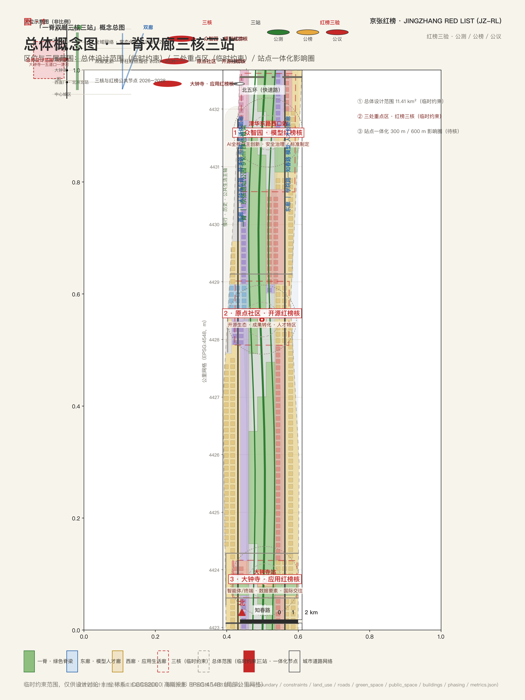
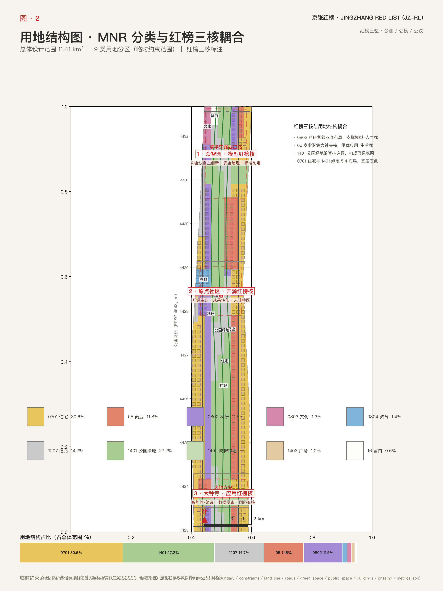
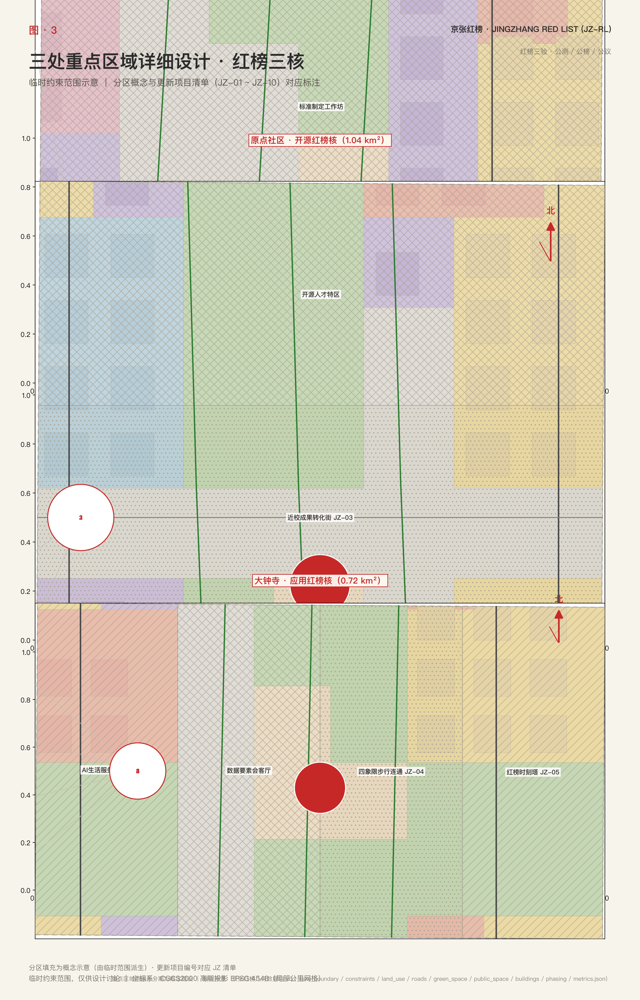
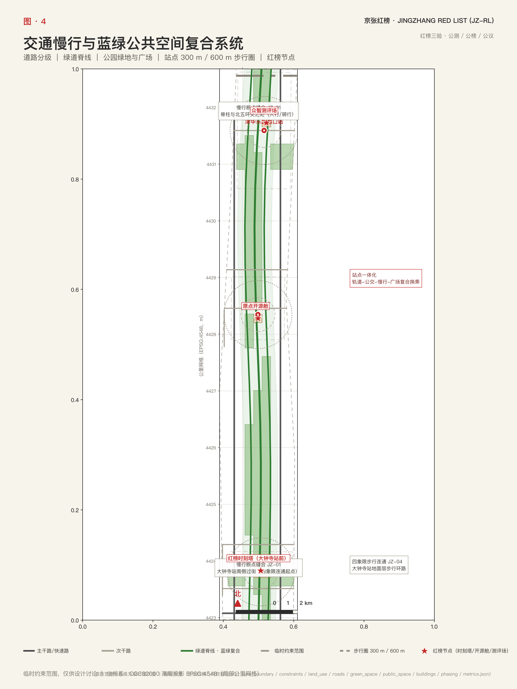
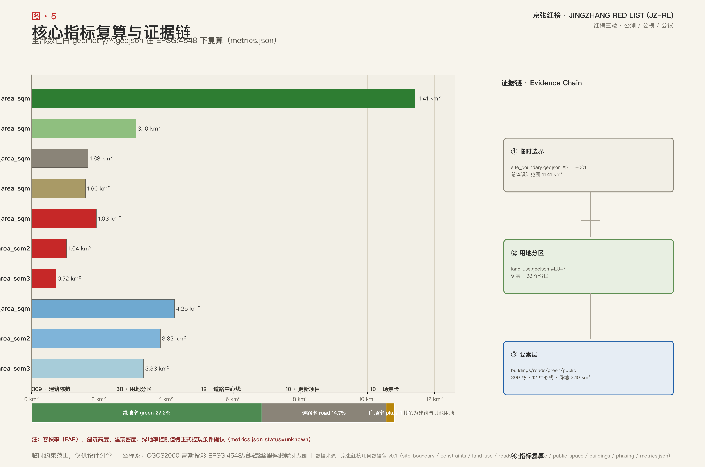

京张红榜：百年京张AI创新带开放评价走廊城市设计方案
以百年京张铁路的'信号—站台—时刻表—验讫'传统为转译母题，提出'京张红榜（JZ-RL）'开放评价走廊概念：通过公测、公榜、公议的'红榜三验'机制，把京张遗址公园9公里绿色脊梁、学院路—知春路与大钟寺东路—荷清路双创新廊、众智园/北京AI原点社区/大钟寺三核组织为面向全球AI的公开测评与公示场所。全部空间成果基于临时约束范围（provisional constraint）生成，边界、用地、建筑与指标均待官方数据发布后复算，正文不构成法定规划或实施承诺。
京张红榜：百年京张AI创新带开放评价走廊城市设计方案
设计依据与资料清单
本方案以北京市规划和自然资源委员会海淀分局发布的《百年京张AI创新带城市设计国际方案征集资格预审公告》为第一依据，公告确定的城市更新与控规深度要求、三层工作范围和智能体任务体系构成本方案的响应框架 来源 标准。方案不是独立愿景文本，而是从公告、场地资料包与面向智能体的任务书出发组织的可复核成果；每一项设计判断均可回溯到来源、图层与指标，正文只承载判断，机器可审计的完整索引保存在结构化文件中。
场地资料包登记了公开、清权与临时三类资料的用途边界，其中边界与重点区多边形均来自经维护者登记的临时推断来源，只能用于方案生成、自检与设计讨论 来源 来源。总体范围边界来自临时边界来源，三处重点区范围来自同一登记来源中的粗略多边形，二者均标注为临时约束范围（provisional constraint），不得作为法定边界、审批依据或精确面积依据 来源 来源。事实处理层把三层范围、三处重点区、公告任务、六个智能体任务、资料可用性与缺口整理成可读导航，但事实判断仍需回到登记原始材料核对 来源。
现状认知建立在场地资料包的现状诊断基础之上。本方案对现状条件作出的判断包括：京张遗址公园沿线存在多处慢行断点、三处重点区功能复合度不均、道路系统以主干路加支路为主而慢行网络连续度不足，以及绿地与历史资源环绕但公共公示空间稀缺。这些判断构成后续更新动作的起点，属于设计深度中的现状诊断项 深度 空间数据 指标。

本方案全部空间成果均基于临时约束范围（provisional constraint）生成：总体设计范围约 1141.3 公顷、重点区三处，面积数字以临时多边形复算，待官方边界发布后需整体重算。正文中的结构、项目与指标按"可讨论、可复核、可替换官方边界后重算"的原则写入，任何临时范围结论均不阻断内容评价，但也不得升格为法定控制结论 来源 来源。
三层范围工作框架
方案按照公告确定的三层范围组织工作：统筹研究范围关注约 43.6 平方公里的 AI 产业生态、创新链与未来城市形态；总体设计范围关注约 11.4 平方公里的京张遗址公园周边城市地区，要求形成城市更新总体框架、产业空间布局、交通市政支撑与风貌控制；重点区域范围关注三处详细设计地区，要求达到规划综合实施方案的深度 深度。三层范围不是割裂的图纸集合：统筹研究回答产业与城市形态判断，总体设计把判断落实为更新项目、空间结构与设施承载，重点区域验证地块、建筑、交通与公共空间的可实施性。
本方案的总体概念为「京张红榜 JINGZHANG RED LIST（JZ-RL）」：把百年京张铁路的"信号—站台—时刻表—验讫"传统转译为一条面向全球 AI 的开放评价走廊。核心机制为「红榜三验」——每一个 AI 产品或城市 AI 服务上线创新带，都要经过公开测试（公测）、公榜公示（公开评价、排行与红黑榜信号语言）、公众评议与可回滚（公议），三者构成一个"红榜班次"。红线在此只表达"评价与回滚"的公共约束，不是官方规划红线。空间骨架为「一脊双廊三核三站」：一脊是京张遗址公园 9 公里绿色脊梁，双廊是学院路—知春路「模型·人才」创新廊与大钟寺东路—荷清路「应用·生活」体验廊，三核是众智园「模型红榜核」、北京 AI 原点社区「开源红榜核」、大钟寺「应用红榜核」，三站是大钟寺站、五道口站、清华东路西口站三个轨道一体化红榜节点（站点位置为粗略定位，待正式核实）深度 空间数据 空间数据。

三区两翼作为概念协同写入：三区即三处重点区，两翼指中关村科技服务翼与小月河场景赋能翼，分别承担要素全球化配置、中关村 IP 与资本赋能，以及场景开放与 AI 活力城市职能；两翼以概念建议方式表达，不落为法定边界 标准 来源。
| 层级 | 设计问题 | 方案回答 | 数据落点 |
|---|---|---|---|
| 统筹研究范围 | AI 产业生态与未来城市形态如何组织 | 建立"高校策源—开源协作—企业转化—公共体验—国际传播"创新链，叠加红榜评价机制 | 空间数据、指标 |
| 总体设计范围 | 产业空间、更新框架、交通市政与风貌如何落图 | 以用地、建筑、道路、蓝绿、分期图层共同表达一脊双廊三核骨架 | 空间数据、空间数据 |
| 重点区域范围 | 三处片区如何达到详细设计深度 | 分别提出定位、空间动作、AI 场景与实施依赖 | 空间数据、空间数据、空间数据 |
统筹研究范围产业与未来城市研究
统筹研究范围的判断是：京张创新带的竞争力不只在算力与模型，更在"可公开验证"的制度供给。方案围绕五大功能组织产业生态——AI 全栈自主创新体系（众智园）、世界级 AI 创新生态（原点社区）、AI+ 场景赋能新范式（大钟寺与场景卡体系）、智能化 AI 活力城市（蓝绿慢行复合环与 AI 公共服务）、AI 治理全球话语权（红榜评价机制、国际公议与年度红榜大会）标准 来源。这些要求来自公开征集的智能体任务书，属于概念建议与参考方案范畴，不是法定产业规划。
命名系统与 Logo 方向。 总品牌为「京张红榜 JINGZHANG RED LIST（JZ-RL）」，副品牌为「众智·测评场」「原点·开源舱」「大钟寺·应用巷」，分别对应三核的模型测评、开源协作与应用体验职能。Logo 视觉母题为三色信号灯（绿=通过、黄=复测、红=回滚），叠加时刻表轨道刻度与榜单条形码，构成"红榜三验"标识体系；该母题将贯穿导视系统、公共艺术与数字界面，使"评价与可回滚"成为创新带可感知的公共语言，也把铁路时代的信号纪律转译为 AI 时代的公共信任规则。
文化叙事。 方案把 1909 年京张铁路（詹天佑"人"字形展线、清华园车站、信号与时刻表文化）→ 中关村（电子一条街到国家自主创新示范区）→ AI 新文化（开源、测评、公议、可回滚）组织为连续叙事线：铁路时代靠信号保证安全，中关村时代靠市场检验创新，AI 时代靠公测、公榜、公议保证信任 深度。这一叙事同时回应百年京张文化带、都市 AI 生活体验带、AI 融合创新带的三层定位，分别对应「文化红榜」「生活红榜」「产业红榜」三张公共榜单。
六个 AI 生态案例（概念建议）如下 指标：
| 编号 | AI 生态案例 | 空间载体 | 运营要点 |
|---|---|---|---|
| EC-01 | 全栈自主创新平台 | 众智园测评场 | 自主模型测试、标准制定工作坊、安全治理展示 |
| EC-02 | 开源基础模型社区 | 原点社区开源舱 | 代码贡献荣誉墙、成果发布厅、开发者协作空间 |
| EC-03 | 智能体互操作标准工作坊 | 双廊沿线企业集群 | 行业标准研讨、互操作测评方法学共建 |
| EC-04 | 数据要素合规流通服务 | 大钟寺数据要素会客厅 | 授权、合规、可审计的流通服务界面 |
| EC-05 | AI+ 公共服务运营体 | 生活红榜节点网络 | 医疗、教育、生活服务的 AI 化运营样板 |
| EC-06 | 全球 AI 红榜大会 | 红榜时刻塔与公共路线 | 年度发榜、国际评测机构邀请、朝圣节 |
未来城市形态研究回答 AI 如何改变工作、生活、社交与公共服务：方案提出 AI 交通系统、连续绿色空间、创新服务设施与国际化的生活工作氛围应落实为可定位的功能区、节点与廊道，而非泛技术愿景；风貌、公共空间与建筑布局的统筹关系按城市设计管理办法的专业要求组织 标准。若提出全球 AI 创新活动、开发者社区、开放场景或朝圣路线，均作为概念建议与可供专业团队深化研究的参考方案，不构成已确定的政府活动或实施安排。
总体设计范围城市更新与控规深度城市设计
总体设计范围要求达到控制性详细规划的城市设计深度，方案据此组织用地结构、建筑规模、更新项目清单、实施政策建议与综合承载能力评估，并明确哪些内容属于控规法定内容、哪些属于待正式数据补齐的内容 标准。本范围的核心判断是：在保留既有住区与公共空间基底的前提下，以科研与商业用地为更新增量，围绕三核组织"评估—转化—公示"的 AI 空间链 空间数据 空间数据 指标。
场地生成结果显示：范围内住宅用地约 348.9 万平方米（30.6%）、公园绿地约 310.5 万平方米（27.2%）、道路约 167.8 万平方米（14.7%）、商业约 134.5 万平方米（11.8%）、科研约 131.5 万平方米（11.5%），另有教育、文化、广场与留白用地。这个结构说明本范围首先是生活与生态优先的地区，更新应围绕绿廊与轨道站点做"针灸式"提质，而不是大拆大建 深度 空间数据 空间数据。
建筑规模方面，图层记录 309 个建筑基底、合计约 160.2 万平方米，其中以保留为主、科研与商业为新建方向 指标 空间数据。容积率、建筑高度、建筑密度与绿地率控制等指标目前缺少官方控规条件，本方案一律标注为待正式控规条件确认，不以推测值冒充审定指标；正式深化时需以官方控制性详细规划条件为唯一依据 深度 指标 指标。
重点区域详细设计
三处重点区对应红榜三核：众智园 = 「模型红榜核」，承担 AI 全栈自主创新、安全治理与标准制定；北京 AI 原点社区 = 「开源红榜核」，承担开源生态、成果转化与人才特区职能；大钟寺 = 「应用红榜核」，承担智能体、智能终端、内容消费、数据要素与国际交往职能 空间数据 空间数据 空间数据。三核与红榜班次一一对应：测评场开"模型班次"，开源舱开"社区班次"，应用巷开"生活班次"，使评价机制成为三处片区的日常运营内容而非附加活动。

详细设计深度要求功能业态、建筑规模、建筑形态、拆改留分类、公共空间系统、交通组织与实施项目七类内容齐备，并由设计深度矩阵检查其完整性 深度 标准。三处重点区面积以临时范围复算，众智园约 192.9 公顷、原点社区约 104.3 公顷、大钟寺约 72.0 公顷，精确面积待官方重点区多边形发布后重算 指标 指标。
| 重点片区 | 设计定位 | 空间动作 | AI 场景与运营载体 |
|---|---|---|---|
| 众智园AI自主创新加速区 | 花园型全栈自主创新与测评街区 | 强化清河界面、低碳创新交往空间与对外交通；绿色空间承载开放测试与安全治理展示 | 模型公测场、安全红队沙盒、标准工作坊、众智测评场 |
| 北京AI原点社区 | 近校型成果转化与开源人才社区 | 校区、园区、街区慢行缝合；补足成果发布、人才服务与居住生活配套 | 开源发布厅、成果转化街、原点开源舱 |
| 大钟寺AI产业聚集区 | 城市型智能经济与国际交往街区 | 大钟寺站一体化、四象限步行连通、商业与重点企业周边公共环境更新 | 智能体互操作测评巷、数据要素会客厅、国际路演客厅、红榜时刻塔 |
以上片区定位、面积与空间动作为概念建议与参考方案，供专业团队深化研究，不构成法定控制或实施承诺 来源 深度。
AI 创新生态、人才画像与 AI+ 场景
方案建立面向 AI 人才与企业的空间需求画像，覆盖研发办公、开源协作、成果发布、企业服务、人才居住、社交学习、消费生活与运动休闲。五类用户画像及空间响应如下 指标：
| 用户画像 | 典型需求 | 空间响应 | 数据与隐私边界 |
|---|---|---|---|
| 开源开发者 | 发布、协作、测试、社区声誉 | 原点社区开源舱、公共代码墙、夜间协作空间 | 不采集个人行为轨迹，活动数据只做聚合统计 |
| 初创团队 | 低成本办公、算力入口、产品试验场 | 众智园共享测评场、端侧算力服务点、标准治理咨询 | 算力与数据服务需另行授权 |
| 头部企业访客 | 展示、商务、国际接待、人才招聘 | 大钟寺国际路演客厅、轨道接驳、企业周边公共空间 | 企业标识与案例需清权 |
| 周边居民 | 通勤、休闲、社区服务、低扰动更新 | 京张遗址公园慢行环、社区服务嵌入、活动分级管理 | 不将居民画像用于商业推荐 |
| 高校师生 | 成果转化、跨校协作、日常慢行 | 校区—园区慢行缝合、成果转化驿站、AI 教育体验点 | 校园数据与科研成果需授权 |
十张 AI 场景卡把产业场景与城市功能场景落到具体空间载体 指标：
| 场景卡 | 空间载体 | 设计说明 |
|---|---|---|
| 01 模型公测场 | 众智园测评场 | 自主模型多模态公开测试，结果入产业红榜 |
| 02 安全红队沙盒 | 众智园 | 可参观、可预约、可监管的安全评测与红队演练 |
| 03 开源发布厅 | 原点社区 | 成果发布、代码贡献展示与小型路演空间 |
| 04 成果转化街 | 原点社区近校街区 | 孵化、展示、法务、知识产权与投融资服务串联 |
| 05 智能体互操作测评巷 | 大钟寺片区 | 智能体互操作与责任边界公开测评 |
| 06 数据要素会客厅 | 大钟寺片区 | 以合规、授权、可审计为前提的流通服务界面 |
| 07 AI 生活服务样板街 | 社区与商业交汇处 | 医疗、教育、法律、生活服务 AI 化的小尺度街区 |
| 08 端侧算力驿站 | 总体范围节点 | 端侧算力与分布式能源结合的新型基础设施原型 |
| 09 国际路演客厅 | 大钟寺 | 智能体、终端与内容消费企业的国际展示洽谈 |
| 10 红榜时刻塔公共公示 | 大钟寺站前 | 季度公榜与年度发榜的公共公示场所 |
三个产业测试验证场景作为红榜班次的标准化科目：①自主模型多模态一致性公测，验证模型在图像、语音、文本上的输出一致性；②智能体互操作与安全责任测评，验证跨平台协作与责任边界；③数据要素流通沙箱与合规验证，验证授权链路与可审计性 指标。三个场景分别落于众智园测评场、大钟寺测评巷与数据要素会客厅，成为企业可预约的公共测试服务。
三个 AI 朝圣地标把文化叙事落为可访问的空间：①红榜时刻塔（大钟寺站前，公共公示与年度发榜地）；②原点开源舱（原点社区，开源贡献荣誉墙与成果发布厅）；③众智测评场（众智园，公开测评与安全红队展示场）指标。AI 治理方面，城市智能体可辅助识别慢行断点、公共空间热力、设施维护与企业服务需求，但不得替代规划审批、不得输出未经授权的个人画像、不得声称获得官方实施承诺 来源。
用地、建筑规模与拆改留方案
用地分类按照国土空间调查、规划与用途管制分类的公开标准表达，形成完整闭合的用地分区 标准 深度。基于临时范围复算的用地结构为：住宅 30.6%（约 348.9 万㎡）、公园绿地 27.2%（约 310.5 万㎡）、道路 14.7%（约 167.8 万㎡）、商业 11.8%（约 134.5 万㎡）、科研 11.5%（约 131.5 万㎡）、教育约 15.7 万㎡、文化约 14.9 万㎡、广场约 1.0%（11.3 万㎡）、留白约 0.6%（6.3 万㎡）指标 空间数据 空间数据。
各地类的设计意图如下：住宅保持高占比，支撑"住职平衡的 AI 生活城市"判断，更新以品质提升而非功能置换为主 空间数据；公园绿地高占比与京张遗址公园脊梁叠合，是红榜公共公示、慢行与社区生活的共同载体 空间数据 空间数据。商业与科研用地围绕三核与双廊集中，形成"评估—转化—公示"的 AI 空间链：科研集聚在众智园与学院路一侧，商业与内容消费集聚在大钟寺一侧 空间数据 空间数据。教育用地缝合校区与园区 空间数据，文化用地承载铁路历史记忆 空间数据，广场用地承担站前公示与节庆活动 空间数据，留白用地为未来 AI 设施预留弹性。
建筑规模与强度指标与指标文件保持一致：建筑基底约 160.2 万平方米、309 栋，以保留为主 指标 指标。容积率、建筑高度与建筑密度控制条件均待正式数据补齐，不得以固定数值制造精确感 指标 指标 指标；绿地率控制同样待正式控规条件确认 指标。
拆改留方法遵循"保留为主、针灸更新"的原则：保留住区与公共设施基底，对低效科研与老旧商业地块组织局部更新，拆改留分类由设计深度矩阵逐地块核对 深度 空间数据。建筑高度、体量与风貌引导作为待深化项，结合清河界面、轨道站点周边与历史建筑周边三级梯度提出，具体数值以正式控规条件为准 深度 空间数据。
交通、轨道、市政与公共服务设施
交通方案围绕"轨道为骨架、慢行为网络、红榜节点为锚"组织。三个轨道一体化节点——大钟寺站、五道口站、清华东路西口站——分别锚定应用红榜核、学院路创新廊东端与清华东路接口，作为"红榜班次"的到发枢纽 空间数据 空间数据 空间数据。轨道站点一体化、道路微循环、非机动车停放、停车供给与慢行断点缝合由交通、轨道、慢行与停车深度项约束，站点精确位置与一体化方案均在临时约束范围（provisional constraint）下表达，待正式核实 深度。
道路系统由 12 条设计中心线表达：学院路方向主干路与北五环快速路承担对外交通 空间数据 空间数据，大钟寺东路—荷清路方向主干路承担双廊之间的联系 空间数据，三条绿色廊道中心线组织脊柱慢行 空间数据，支路承担街区微循环 指标。道路面积为设计走廊宽度，非法定道路红线；涉及道路红线的结论均待正式控规条件确认。跨北五环与京张遗址公园的慢行节点、五道口与清华东路西口站点的接驳关系，按概念建议表达 空间数据 空间数据。

市政与新型基础设施方面，方案提出端侧算力驿站与分布式能源结合 AI 公共服务节点布局，创新服务平台、人才生活服务设施与传统市政设施融合设置，服务半径与运营模式在实施阶段深化 深度 空间数据。缺少管线、能源、排水、防洪、消防等工程资料时，均列为正式深化前置条件，不写入审定结论。
蓝绿空间、公共空间与城市风貌
蓝绿空间以京张遗址公园 9 公里绿色脊梁为骨架，统筹清河、小月河与高校、企业、社区出行需求，形成南北贯通、东西连通的步道与骑行体系。脊梁分段表达为绿地组群 空间数据，绿廊中心线组织慢行主线 空间数据，慢行断点与上跨环路节点列入近期缝合项目 深度 空间数据。绿地率约 27.2%、广场约占 1.0%，蓝绿公共空间的设计意义在于：脊梁同时承载日常慢行、社区交往与红榜公示三类公共生活，公共空间比例是红榜公议机制的空间保障 指标 指标。
广场与站前公共空间共 3 处，承担公榜公示、节庆与朝圣活动，其中大钟寺站前广场是红榜时刻塔的落点 空间数据 空间数据。绿地总面积约 310.5 万平方米，与蓝绿图层一致 指标 空间数据。城市风貌统筹按照城市设计管理办法关于风貌、公共空间与建筑布局统筹的要求组织 标准 深度。风貌方案融合京张铁路历史、中关村创新与 AI 新文化三层记忆：以清华园车站等历史资源为锚点，以三色信号母题贯穿导视、公共艺术与数字界面，提出建筑基调、体量、屋顶形态与界面引导；所有品牌、字体、图像、肖像与企业标识均须有清权来源 来源。
更新项目清单、实施政策与分期计划
方案提出十个更新项目，覆盖公共空间、轨道一体化、产业载体、新型基础设施与品牌运营，形成"红榜节点—空间缝合—产业载体"三类抓手 深度 指标：
| 项目编号 | 项目名称 | 类型 | 主要依赖 |
|---|---|---|---|
| JZ-01 | 京张遗址公园慢行断点缝合 | 公共空间/慢行 | 道路红线、桥下空间、交通组织复核 |
| JZ-02 | 众智园清河创新界面 | 蓝绿空间/产业展示 | 河道蓝线、生态与防洪条件 |
| JZ-03 | 原点社区近校成果转化街 | 城市更新/产业服务 | 校区边界、权属、首层业态 |
| JZ-04 | 大钟寺站四象限步行连通 | 轨道一体化/慢行 | 站点、交叉口、市政管线 |
| JZ-05 | 红榜时刻塔与公示信息亭网络 | 公共公示/新基建 | 公共空间许可、运营主体 |
| JZ-06 | 原点开源舱 | 产业载体/文化 | 校地协同、权属与运营机制 |
| JZ-07 | 众智测评场与安全红队沙盒 | 产业载体/治理 | 标准、安全与监管机制 |
| JZ-08 | 数据要素会客厅 | 产业载体/治理 | 数据合规、授权与审计机制 |
| JZ-09 | AI 生活服务样板街 | 街区更新/公共服务 | 业态准入、运营与评估机制 |
| JZ-10 | 全球 AI 红榜大会公共路线 | 运营/品牌 | 公共空间许可、活动安全、版权清权 |
实施分期与征集周期严格区分：征集周期是 100 天的成果提交时间约束，实施分期是城市更新的推进路径，两者不得混淆。本方案提出三期——一期（2026—2028）建设三核与红榜公共节点（时刻塔、开源舱、测评场）并试点站点一体化；二期（2028—2031）推进双廊更新与脊柱慢行断点缝合；三期（2031—2035）形成全域网络、常态化运营与年度红榜大会品牌，实施节奏与空间范围见分期图层 深度，一期、二期、三期分别对应 空间数据 空间数据 空间数据 的范围。三期空间范围由分期图层复算：一期约 425.1 万㎡、二期约 383.0 万㎡、三期约 333.2 万㎡，分期本身是设计建议而非实施承诺 指标 空间数据。
长期运营构划为红榜三级运营体系：日常公测班次由平台运营，季度公榜由公议会复核，年度红榜大会与朝圣节由多方共建；配套开发者社区运营、月度场景开放日与双月公议会，并通过国际传播邀请全球评测机构参与红榜大会。其中开发者社区与场景开放日可先以轻量设施与运营活动启动，年度红榜大会与大型设施必须等待正式控规、市政、交通与权属条件确认；运营对象、频率、责任边界与转化路径在实施阶段进一步明确，本方案只作概念建议 来源 深度。
指标体系、面积复算与合规矩阵
指标体系把空间结论转化为可复核数字。本方案核心指标包括：总体设计范围面积约 1141.3 公顷、重点区三处、绿地率约 27.2%、广场比例约 1.0%、道路比例约 14.7%、建筑基底约 160.2 万㎡/309 栋、更新项目 10 个、AI 场景卡 10 张、产业测试场景 3 个、用户画像 5 类、朝圣地标 3 个、AI 生态案例 6 个，全部可由提交几何或正文复算。复算口径与公式详见指标文件 深度：场地边界面积 指标、重点区数量 指标 与绿地率 指标 等。指标公式、来源与置信度保存在指标文件，正文只解释设计含义，不重复机器索引。

指标分为三类：第一类是可由提交几何直接复算的空间指标，如边界面积、绿地比例、广场比例、建筑基底与分期面积 指标 指标；第二类是需要官方控规支撑的管控指标，如容积率、建筑高度、建筑密度与绿地率控制，目前均为待正式数据补齐；第三类是需要运营数据持续校准的绩效指标，如 AI 创新指数、人才密度、场景使用频次与公议参与度，属于运营愿景而非审定规划条件 指标。任务覆盖矩阵、专业标准矩阵与设计深度矩阵分别记录公告与智能体任务的响应、专业标准覆盖与设计深度自检，任何必选任务未覆盖时方案不得进入专业评分 标准 深度。
风险、版权与合规说明
双语言要求。 本方案主文件为中文，同时通过对照译文文件提供完整英文版本；含文字的图件与数字成果亦提供对应语言副本，术语优先采用赛事推荐译法。缺任一所必需译稿时，提交流程将被阻断，因此双语言成果与正文同步维护 来源。
临时约束范围的精度警示。 总体边界与重点区多边形均为临时约束范围（provisional constraint），边界精度为粗略推断，不得用于精确面积、权属判断或法定控制；官方边界发布后，用地、建筑、道路、蓝绿、分期与全部指标必须整体重算，不能只替换单个文件 来源 来源 深度。缺资料清单中列出的官方边界、重点区、控规、道路红线、权属、市政、消防与文保条件，全部进入假设文件与正文风险章节，任何由此缺口的结论均降级为待确认事项 来源。
本方案不声称官方批准、审定控规、最终土地权属、最终建设规模或保证实施；所有空间与运营内容均以概念建议、参考方案或可供专业团队深化研究的表述出现，智能体任务书中的空间构想一律按此口径转写，不构成法定规划与实施承诺 标准 深度。图片、图纸、数据与代码资产均声明来源、许可与授权状态；HTML 成果不加载远程脚本、瓦片、字体与外部接口。
参考资料
- brief/public-brief.md（公告文件，第一依据）
- brief/site-package/design_brief.json（设计任务结构化描述）
- brief/site-package/allowed_design_space.json（允许设计空间）
- brief/site-package/ranges/planning_limits.json（规划限制范围）
- data/source_registry.json、data/processed/agent_fact_pack.md（资料登记与事实处理层）
- data/processed/project_scope_summary.csv、agent_task_requirements.csv、source_use_matrix.csv、missing_data_checklist.csv
- 完整机器索引：sources.json、metrics.json、compliance_matrix.json、standard_matrix.json、design_depth_matrix.json、assumptions.json
- 本节目录入口依据场地资料包登记，完整出处与许可见结构化来源清单 来源 来源